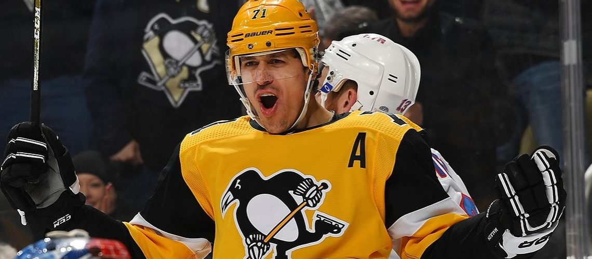
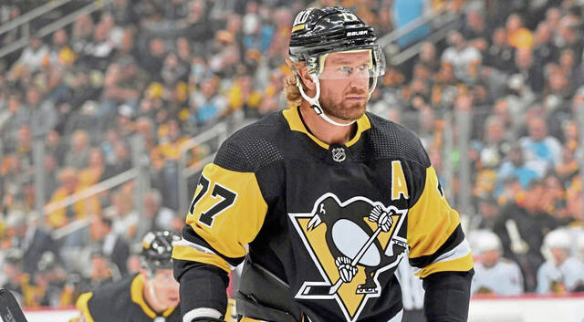
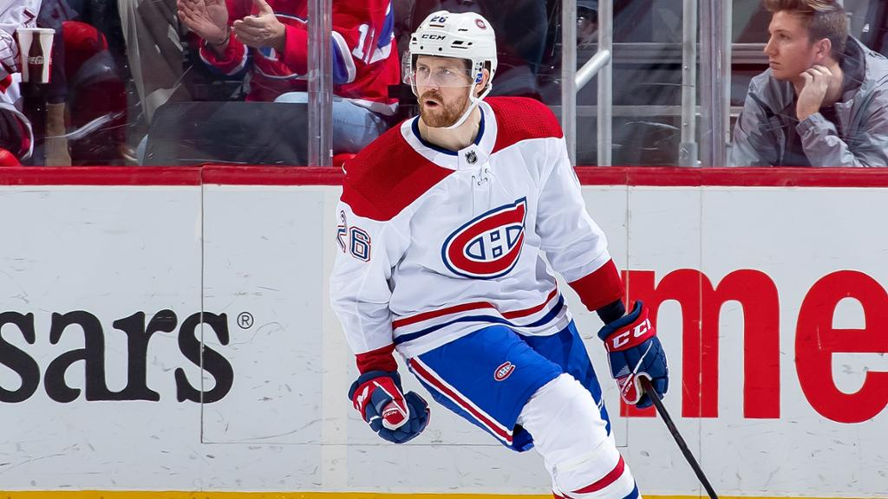

Sidney Crosby
Capitão do time, joga na primeira linha como centro. Seus pares de linha são Jake Guentzel e Rickard Rakell.
Placeholder
Evgeni Malkin
Centro de segunda linha, é um capitão alternativo. Atualmente, seus pares de linha são Bryan Rust e Evan Rodrigues
Investindo em experiência Estratégia do Burgo
Um time mais velho é um time melhor?
Placeholder
Novas caras em Pittsburgh Jeff Petry
E mais uma vez um troca boa para o time.
Placeholder
O que esperar de Marcus Pettersson Sem seu companheiro
Após a saída de John Marino, qual será o desempenho da segunda linha com Marcus Pettersson?